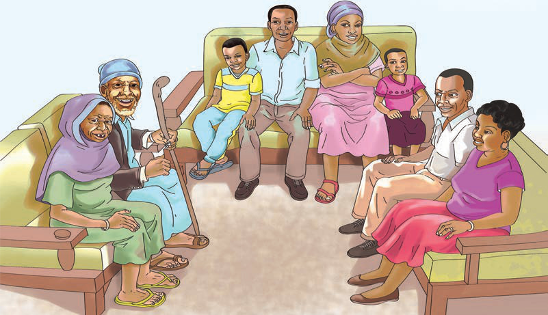
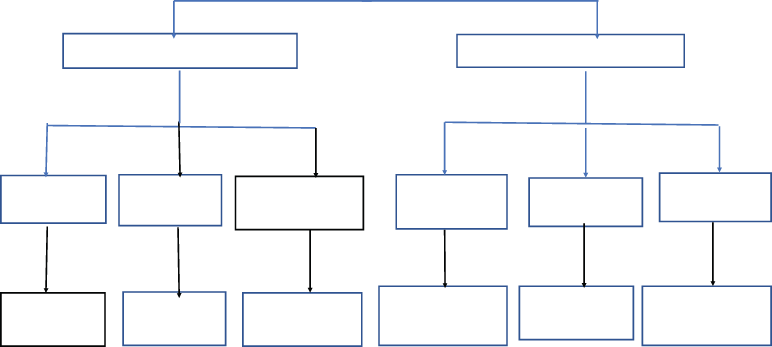

FOR ONLINE READING ONLY
Vilevile, uhusiano wa kifamilia huhusisha watu wa karibu; kwa mfano, babu, bibi, shangazi, mjomba na binamu.
Kielelezo namba 3 kinaonesha uhusiano wa kifamilia na ndugu wa karibu.

Kielelezo namba 3: Uhusiano wa wazazi, watoto, babu, bibi mjomba na shangazi
Chunguza kielelezo namba 4 kuhusu mti wa ndugu wa karibu na familia, kisha fanya zoezi la 2.

Wazazi wa baba (babu & bibi)
Wazazi wa mama (babu & bibi)
Kaka zake baba
Dada zake baba
Wadogo zake baba
Kaka zake mama
Dada zake mama
Wadogo zake mama
Watoto wa kaka zake baba
Watoto wa dada zake baba
Watoto wa wadogo zake baba
Watoto wa kaka zake mama
Watoto wa dada zake mama
Watoto wa wadogo zake mama
Kielelezo namba 4: Mti wa ndugu wa karibu na familia
Historia ya Tanzania na Maadili STD 3 PB Final.indd 121
29/11/2024 17:15